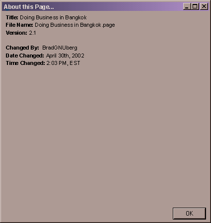
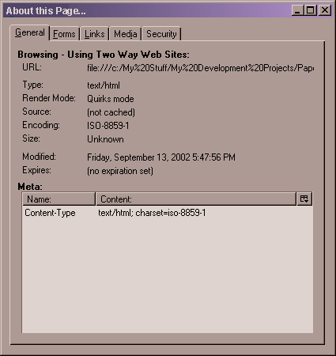

| | |
Table of Contents | Last | Next
Browsing - About this Page...
The About this Page...dialog window provides information about the page being viewed. To open this dialog select the File pull-down menu, followed by About this Page.... This will show the About this Page... dialog window:

About this Page... Dialog Window
Note: The Changed By: field will not be shown if you are a non-member of the current site to protect member privacy.
The above dialog is only shown for Two Way Web Pages. If you are at an older World Wide Web page, the following dialog will be shown instead:

About this Page... for Older World Wide Web Pages
This form of the About this Page... dialog window shows various aspects of the HTML page, such as what forms are located on the page, what links, what media types, security, etc. Click on each tab to see information concerning that category for the current page.